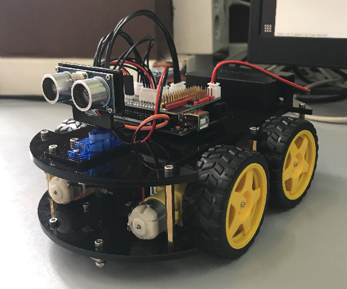
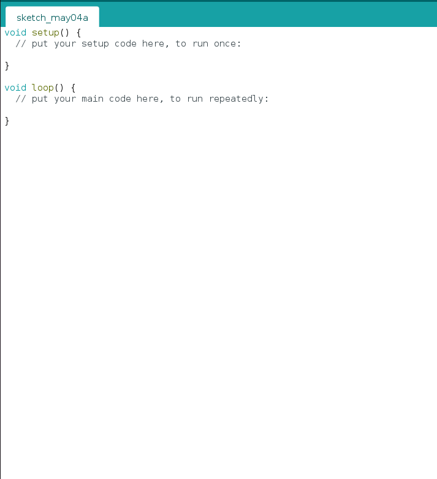
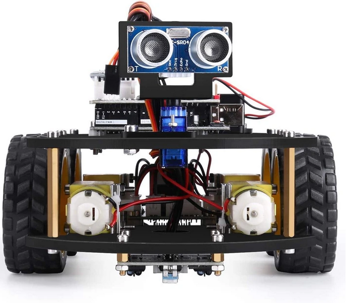
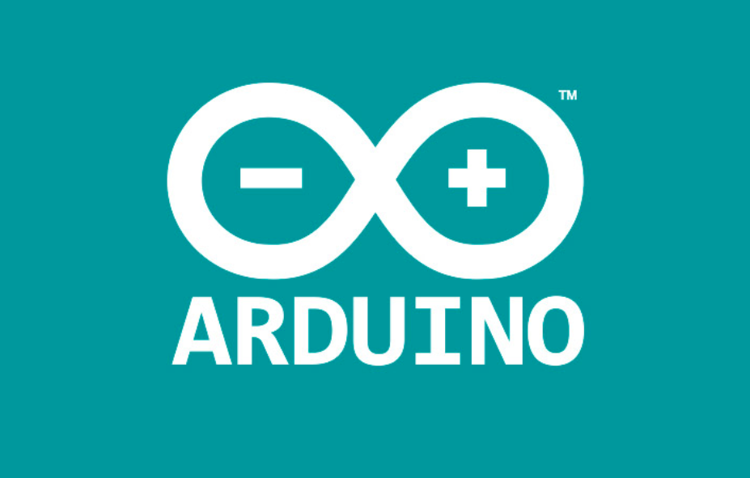
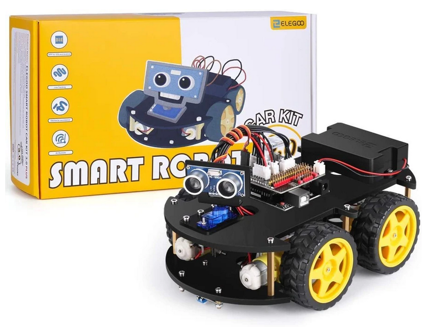

Crearemos un coche que se pueda conducir a distancia vía nuestro teléfono móvil con bluetooth y que mediante el radar que viene implementado en la parte superior pueda detectar los obstáculos que se vaya encontrando en su camino.
Decidimos hacer este proyecto porque en 3r de la ESO ya habíamos trabajado con Arduino y tenemos algo de experiencia en este tema, aparte escogimos el coche en concreto porque de todos los proyectos que encontramos fue el que más nos llamó la atención.
Consideramos que es un proyecto interesante y divertido, ya que estamos utilizando dos programaciones distintas (coche y radar) para que funcionen como una sola y a distancia vía bluetooth. A parte también queríamos que nuestro proyecto tuviera una parte de Hardware, por eso hemos escogido un coche que vamos a tener que montar pieza por pieza.

Mente X
Mente X es el nombre de nuestro proyecto y tendrá dos funciones:
-Se conectará por bluetooth a una aplicación del móvil y desde el nuestro telefono podremos manejarlo.
- El radar detectará los objetos que se encuentre en su camino.

Arduino IDE
Utilizaremos la aplicación de Arduino para llevar a cabo toda la programación tanto del coche como del radar.
El entorno de desarrollo integrado (IDE) de Arduino es una aplicación multiplataforma (para Windows, macOS, Linux ) que está escrita en el lenguaje de programación Java. Se utiliza para escribir y cargar programas en placas compatibles con Arduino
Placa arduino
El Arduino Uno es una placa de microcontrolador de código abierto. La placa tiene 14 pines digitales, 6 pines analógicos y programables con el Arduino IDE a través de un cable USB tipo B.
Esta placa arduino UNO, es con la que nosotros vamos a trabajar y dónde vamos a meter todos los códigos para modificar la programación del coche.
Atom
Atom es un editor de código fuente libre y de código abierto para macOS, Linux, y Microsoft Windows. Es una aplicación de escritorio basada en tecnologías web. Es el que estamos utilizando para realizar la página web.
Sensor HC-SR04
El HC-SR04 es un sensor ultrasónico que mide la distancia con ondas de ultrasonido. Utiliza el mismo principio que un sonar que envía una onda de sonido y mide el tiempo entre la transmisión y la recepción de su eco. Va conectado a la placa arduino y es el que vamos a utilizar para que detecte los objetos.
RESUMEN

Temática
Nuestro proyecto consta de dos partes, en primer lugar el montaje del coche y en segundo lugar la programación tanto del coche para que se pueda connectar a la aplicación del teléfono móvil como del radar. El objetivo principal es montar el coche/robot y que lo podamos conducir vía teléfono móvil, tambien queremos conseguir que detecte los objetos mediante un radar y automaticamente los esquive cambiando de dirección.

Pasos
Para montar nuestro coche robot vamos a seguir un video de youtube que lo explica todo detalladamente y es más visual que seguir un manual.
Para la programación del coche vamos a ir cogiendo códigos y cambiando las funciones hasta que consigamos que conecte con la aplicación y lo podamos conducir.
También tenemos que cambiar el código del radar con la aplicación Arduino IDE y programarlo para que detecte los objetos mientras conducimos el coche desde el teléfono móvil.

Objetivos y conclusión
El objetivo del proyecto es montar y programar el coche para que podamos conducirlo a distancia con nuestro teléfono móvil y que el radar pueda detectar los obstáculos que se vaya encontrando el coche.
Por lo tanto en la entraga final tenemos que haber conseguido que el coche conecte al télefono movil mediante bluetooth y que este pueda esquivar los objetos sin necesidad de que nosotros lo hagamos.